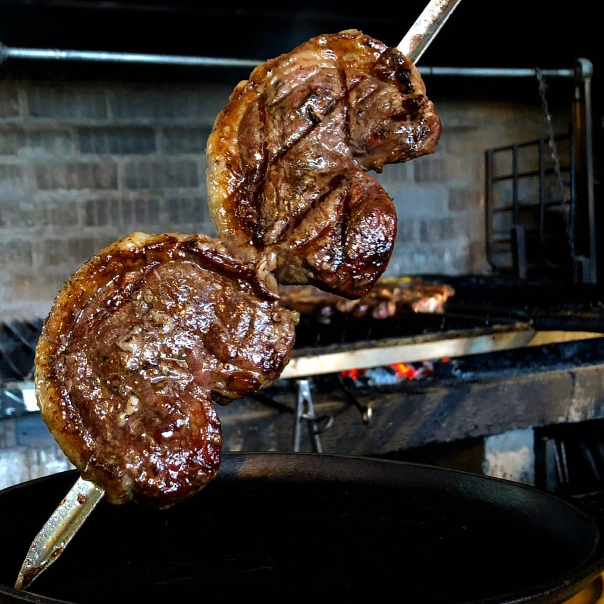
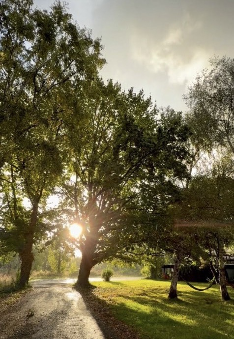
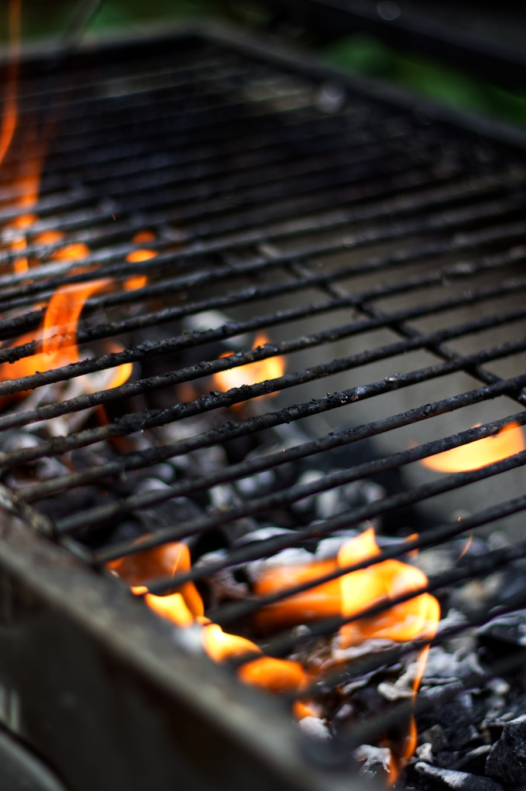
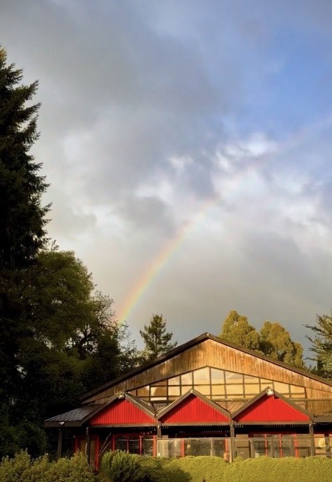
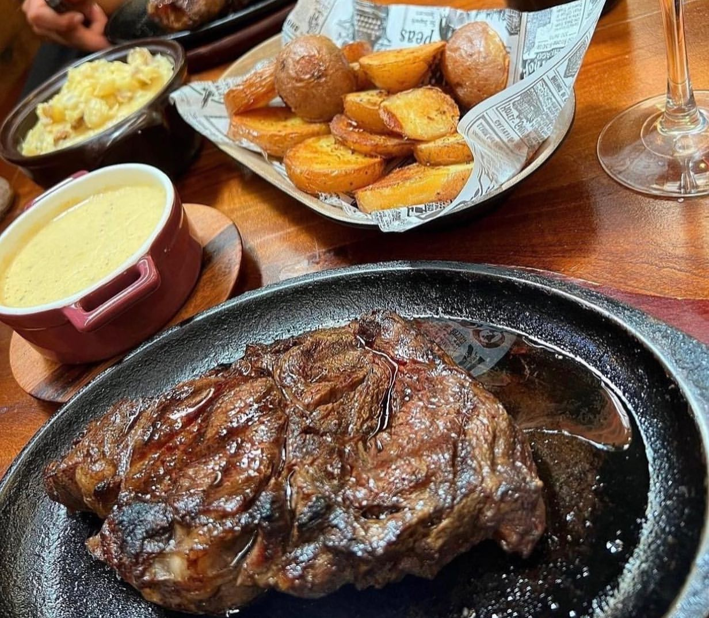
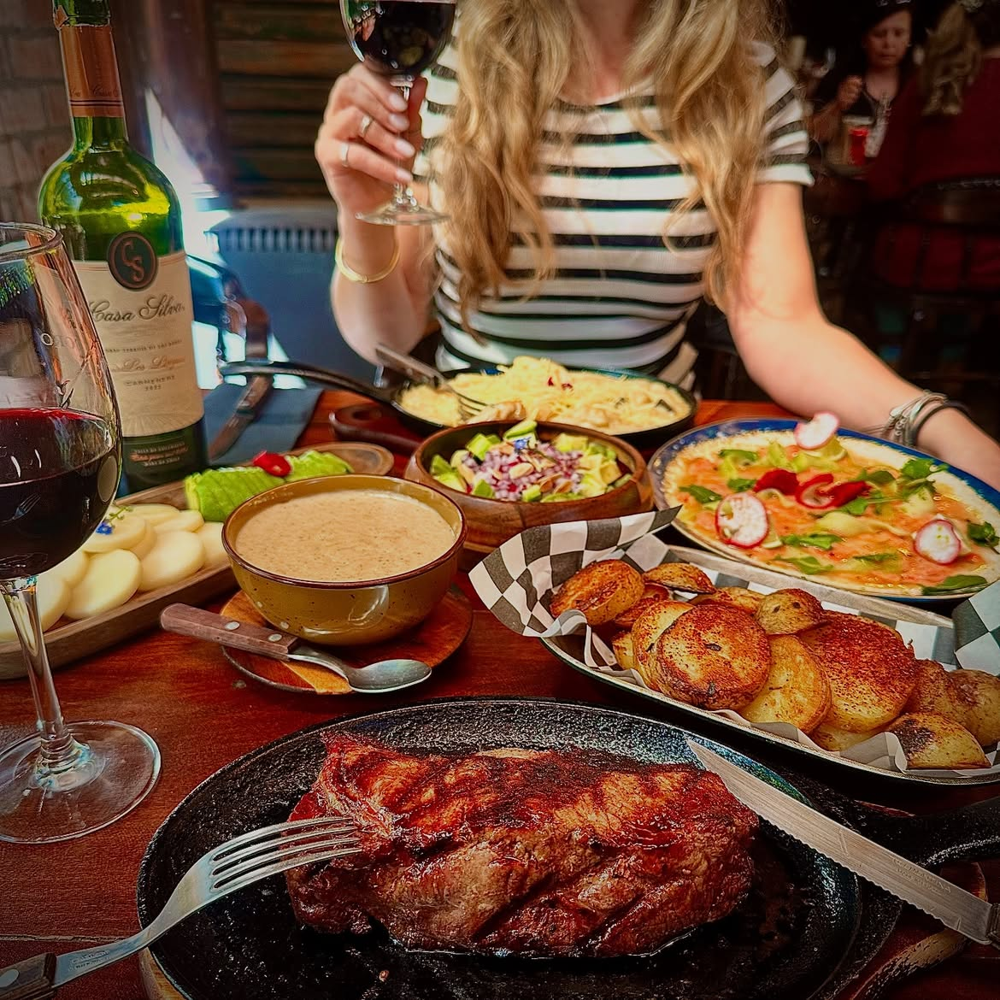
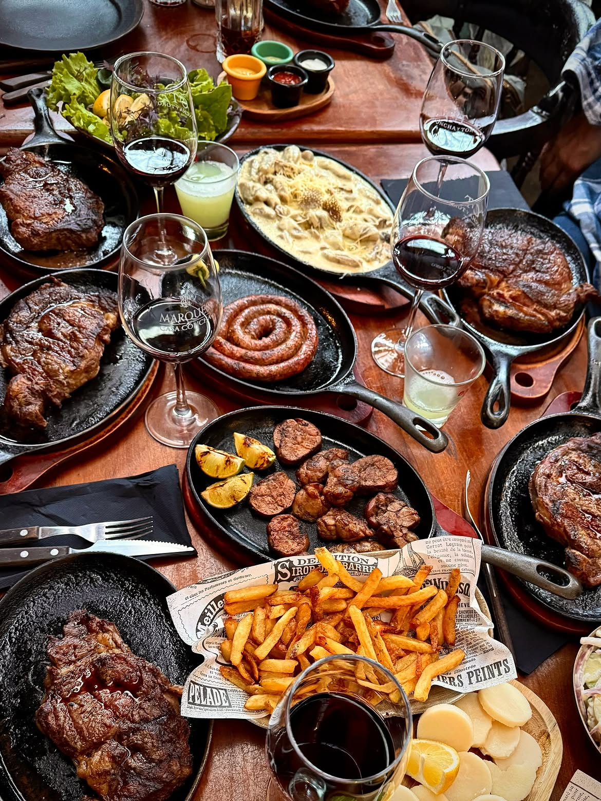
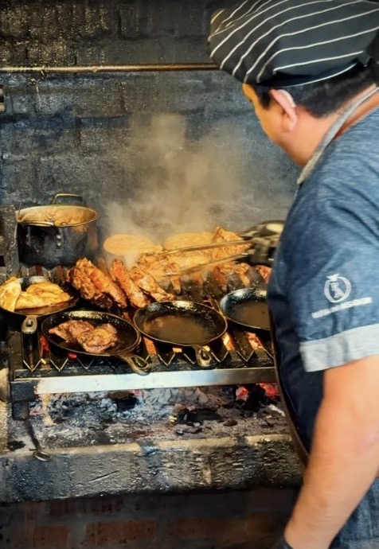
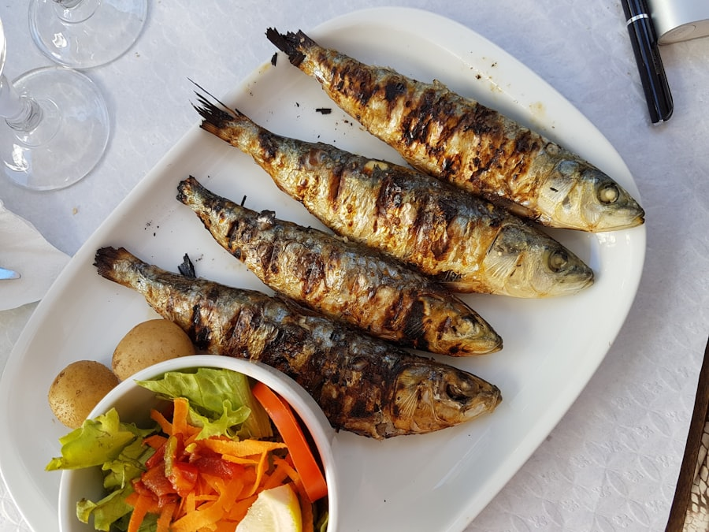
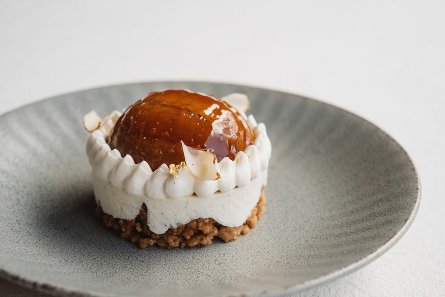

Punta de Ganso a la Espada
Nuestro corte insignia, asado lento al espadín sobre brasas de espino hasta lograr ese dorado perfecto.
Un recorrido que te llevará a los sabores del sur de Chile. Nuestra parrilla siempre prendida, en un galpón de 1940 rodeado de bosque nativo.
Nuestros sueños son realidad: un chef chileno de destacada trayectoria y una mujer sureña emplazaron la Ruta del Asador en un ambiente auténticamente campestre, rodeado de un bosque nativo con más de 150 años de existencia, pero a solo 5 minutos del centro de la ciudad.
Habitamos un galpón de 1940 construido con materiales reciclados y rincones repletos de historia. Traemos a tu mesa carnes de primer nivel provenientes directamente de nuestras pampas — libres de aditivos y preservantes. Estén atentos a nuestras señales de humo: ¡la parrilla está prendida!
Conoce la carta →



Enfocados en la calidad de la materia prima y la preparación tradicional. Nuestra especialidad: la insuperable carne Osornina.
Cortes de carne Osornina a la parrilla de leña, sin aditivos ni preservantes, directo desde nuestras pampas.
Pescados, patos y ensaladas de estación para quienes buscan algo más allá de la carne.
Cierres dulces y tradicionales, preparados en casa para coronar la experiencia.
Con una gran variedad de vinos para deleitar y complementar su elección de comida, usted mismo puede ingresar a nuestra bodega fina y seleccionar para su mesa entre nuestras recomendaciones fieles.
Un espacio para hasta 10 personas que hace de su ocasión algo especial y privado. Reuniones de negocios, grupos familiares o celebraciones pueden tener ese toque diferente que los hará exclusivos en La Ruta del Asador.




Cada corte pasa por leña y brasa, tal como se ha hecho por generaciones en el sur de Chile. Nada de atajos: solo fuego, tiempo y una carne que llega directo desde nuestras pampas.
Nuestras carnes están libres de aditivos y preservantes. Porque el hombre no solo vive de carne, también tenemos pescado, pato y ensaladas para acompañar cada mesa.

Nuestro corte insignia, asado lento al espadín sobre brasas de espino hasta lograr ese dorado perfecto.

Captura fresca de la zona, grillada con hierbas del bosque nativo y ensalada de estación.

Postre casero de estación, preparado a diario para cerrar la experiencia sureña.
Ven a encontrarte con el real sabor sureño en la capital de la carne: Osorno.
A solo 5 minutos del centro de Osorno, rodeados de bosque nativo.
4,5 de 5 en Google y TripAdvisor, con cientos de reseñas de quienes ya recorrieron la ruta.
"La mejor parrilla del sur: sabor, calidad y tradición."
"El mejor restaurante de Osorno, sin dudar."
"La verdadera magia del sur."